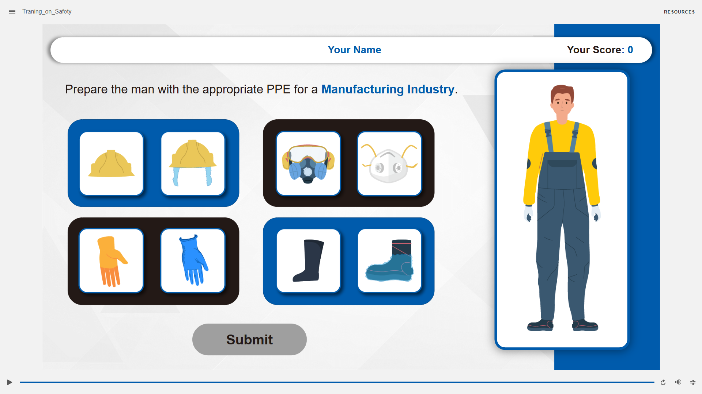

Enterprise Compliance
Live Interactive Demo
Gamified Industrial Safety Simulation
Replacing compliance slide-reading with immersive situational decision-making
Problem
Mandatory safety compliance training was treated as a passive, click-through chore. Completion rates were nominally high, but actual hazard retention was dangerously low because learners were never required to evaluate operational risk in realistic conditions.
Solution
Engineered a high-impact gamified module combining custom 3D facility animations with scenario-based branching decisions in Articulate Storyline. Learners navigate realistic workplace hazards where every decision triggers visual, operational consequences rather than abstract score penalties.
Results
Transformed passive compliance into active practice. Learners test judgment safely, receiving instant diagnostic feedback. Shipped as a fully compliant SCORM package with verifiable competency tracking.

Facility safety decision tree in Storyline
SCORM build